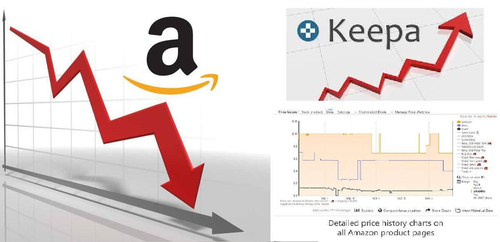
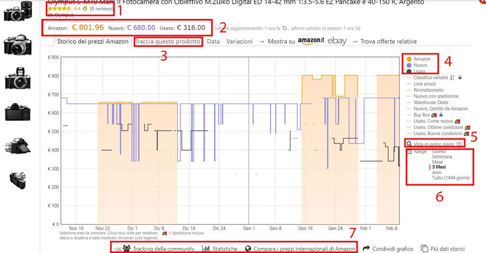
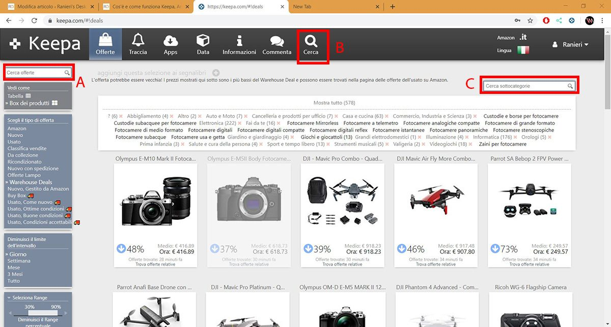
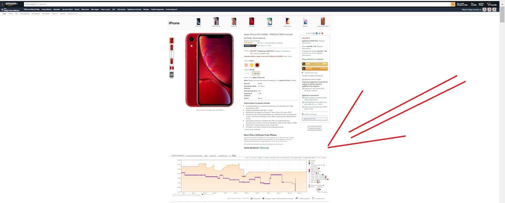

#CONSIGLI👥
⬆️📌 KEEPA - Se acquisti spesso su Amazon e vuoi essere sicuro di acquistare al miglior prezzo, di fare il giusto acquisto senza spendere troppo, e vuoi essere certo che l'offerta proposta sia veramente conveniente e non uno specchietto per le allodole, KEEPA è la soluzione giusta per te.
✅ Keepa è un servizio online gratuito che ti permette di verificare il grafico di andamento prezzi di ogni prodotto (usato o nuovo che sia) in vendita su Amazon.
✅ Inoltre paragona il prezzo di un prodotto in vendita su Amazon Italia con quello spagnolo, tedesco, francese, giapponese, americano e così via. Queste statistiche ti fanno capire quando è stato il minimo storico, qual è il prezzo medio nelle ultime settimane e quanti ribassi al mese subisce il prodotto.
✅ Può sembrare complicato, ma si tratta di un solo grafico e una volta che ci prenderai la mano ti consentirà di risparmiare davvero centinaia di euro. Vediamo nel dettaglio come.
✅ Vi sono diversi modi per usare Keepa in modo gratuito. Questi sono:
- ricerca di uno specifico prodotto (con la funzione “cerca“)
- visualizzazione di offerte in generale (sezione “offerte”)
- funzione di tracciamento del prezzo (registrandosi gratuitamente)
- il suo uso come estensione nel browser (sia desktop che telefono)
Ognuna di esse ti permette di ottenere innumerevoli vantaggi a seconda delle situazioni.
✅ Funzione cerca: Questa sezione è molto utile quando si vuole comprare uno specifico prodotto. Recandosi sul sito web ufficiale di Keepa, nella sezione apposita, potrai inserire il nome specifico.
ECCO UN ESEMPIO DI GRAFICO ANDAMENTO PREZZI DELLA FUNZIONE CERCA:

✅ Sezione delle offerte. Qui poi trovare tutte le offerte disponibili in quel momento suddivise per categoria. Ogni giorno le offerte cambiano e spesso, soprattutto nel caso di prodotti particolarmente allettanti, durano anche poche ore.
ECCO UN ESEMPIO DELLA SEZIONE OFFERTE

✅ Tracciamento del prezzo.
Il tracciamento del prezzo su Keepa fa esattamente quello che ti aspetti, in modo semplice e intuitivo. Se si seleziona dal menu l’icona a forma di campana, una volta effettuata la registrazione gratuita al sito, saranno visualizzati i prodotti in tracciamento. Per tracciare nuovi prodotti devi aprire la schermata del singolo oggetto e selezionare “traccia questo prodotto”. Nelle opzioni potrai impostare il prezzo per il quale vuoi essere avvertito e il modo di notifica (mail o telegram per esempio).
✅ Estensioni per browser (computer e telefono).
Purtroppo, ad oggi, non esiste un app di Keepa, ma vi sono delle eccellenti estensioni per browser che funzionano anche da mobile (in particolare quella per Firefox). Queste mostreranno il grafico del prodotto direttamente sul sito Amazon quando visualizzi un articolo senza dover aprire KEEPA. Davvero comodo!
ECCO UN ESEMPIO DI VISUALIZZAZIONE TRAMITE ESTENSIONE BROWSER

Puoi scaricarle direttamente dai link ufficiali:
In conclusione:
KEEPA: un ottimo strumento per poter fare i giusti acquisti permettendoti di risparmiare.
n.b - E se sei un appassionato del risparmio, ti consiglio anche di dare un'occhiata ad Amazon Warehouse Deals. Ma di questo ne parleremo prossimamente...
Cosa aspetti, inizia a risparmiare!?!?
Visita Keepa 👇
https://keepa.com/
Se lo desideri, iscriviti ai mie canali social per restare aggiornato ⬇️
Social MediaInoltre se hai trovato utile ed interessante questo articolo, non esitare a condividerlo, a lasciare un tuo mi piace 👍, o seguire la mia pagina Facebook per sostenermi e continuare ad informare. Grazie anticipatamente a chi vorrà farlo.